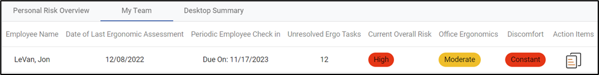

The My Team tab displays all employees listed as your direct reports. This view shows the employee, the date of their last training and assessment, the last time you checked in with that employee, a count of their unresolved issues, their current risk levels, and an action item report.
Note: You will only see the My Team tab if you are listed as someone’s supervisor in their employee demographic record AND the My team tab is turned on in the system settings.

Click on the action item report to open a helpful report that supervisors can use to have meaningful conversations with their direct reports about their ergonomic status.